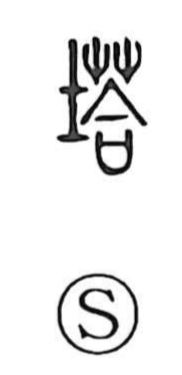

塔

Uncategorized
Kun: | On: tou
pagoda ・ tower ・ stupa
Explanation
A phono-semantic character in which 荅 provides the on reading tō. The graph is not attested in the oldest materials and appears to have arisen in the translation of Buddhist terminology. It abbreviates 卒塔婆 (sotoba), itself a phonetic rendering of the Sanskrit stupa. Accordingly, it first denoted a Buddhist pagoda—a tall structure for enshrining the Buddha’s relics—and later broadened to mean any tall, slender tower, whether connected to Buddhism or not.